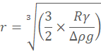
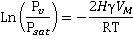
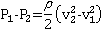

Capillaries are extremely narrow tubes.
 Hydrophobic confinement
Hydrophobic confinement
 Hydrophilic confinement
Hydrophilic confinement
 Capillary rise
Capillary rise
 Capillary condensation
Capillary condensation
 Cavity filling
Cavity filling
 Venturi effect
Venturi effect
 Capillary flow causes ring stains
Capillary flow causes ring stains
Capillary effects
The movement of water (and other liquids) up or down capillary (narrow bore; e.g., ~ 5-300 µm, internal diameter) tubes and confined spaces is due to the surface tension along the curved surfaces. a The meniscus is the curved liquid-gas surface b (shown right) with the water curving towards the surface at hydrophilic surfaces or away at hydrophobic surfaces as shown on the far right.
For hydrophilic capillaries (e.g., glass) dipped in water, the water rises up the capillary until the weight of the water column above the liquid surface equals the support from surface tension,
Column weight = weight per unit volume (ρ ˣ g; density ˣ acceleration due to gravity) ˣ area (π ˣ r2 ) ˣ height (h)
Column weight acting down = ρ ˣ g ˣ π ˣ r2 ˣ h
The support from the surface tension is given by,
Support = surface length (2 ˣ π ˣ r) ˣ surface tension (γ) ˣ cos(θ)
Support acting upwards = 2 ˣ π ˣ r ˣ γ ˣ cos(θ)
where θ is the contact angle (cos(θ) = 1.0 at zero contact angle, see below left).
Thus, as ρ ˣ g ˣ π ˣ r2 ˣ h = 2 ˣ π ˣ r ˣ γ ˣ cos(θ)
h = 2γcos(θ)/rρg
For hydrophilic capillaries (e.g., plastic) dipped in water, the water is dragged down the capillary by the surface tension until the weight of the water column displaced equals the drag from the surface tension (see the right-hand part of the above-right diagram),
The narrower the tube (radius r), the greater the capillary movement (h).
The contact angle

Young's equation describes the forces acting along the contact line between the water, gas, and solid (see left).
γSG = γSL + γLG ˣ cos(θ)
The interfacial free energies between the solid and gas, solid and liquid, and liquid and gas are γSG, γSL, and γLG, respectively. γSG and γSL are generally challenging to determine.
Capillary rise with capillary radius
Thus, water will rise (a maximum) 1.47 cm within a glass capillary one mm in diameter at 25 °C (see left).
An opposite effect occurs in hydrophobic capillaries. The presence of the extensive gas-liquid interfaces and many capillary bridges are responsible for the characteristics of wet sand allowing the easy molding of sand castles [1537].
Capillary rise with capillary radius and contact angle
If the meniscus does not meet the capillary wall at zero angle (θ = 0°), then the contact angle (θ) is related to the radius of curvature R of the meniscus (cos(θ) = r/R), and the Laplace pressure is
2γcos(θ)/r (0 < cos(θ) < 1)
rather than 2γ/r
Allowance for the volume within the meniscus is made by using the value for the height (h) that gives the actual volume of fluid involved [1448]. In reality, the meniscus will not be spherical in shape [1448]. Therefore, the equations will not necessarily hold in tiny capillaries (nm) or when the length of the capillary is shorter than required by the relationships.
There are confounding factors when we consider very fine capillaries. The surface will not be uniform but involve many molecularly organized environments. Also, strongly bound water will reduce the effective capillary diameter, so increasing any water movement. Although the capillary rise phenomenon holds for very small diameter capillaries, it is not clear that it can scale down to nanometer or molecularly sized capillaries [1449].
Capillary flow (wicking) may also occur between closely spaced surfaces, such as within fine brushes and fine dry powders like in thin layer chromatography. Also, it causes flow in dry porous materials such as paper, soil, and bricks. Water is usually static next to hydrophilic surfaces but slips at hydrophobic surfaces, with the slip length varying with surface hydrophobicity, surface roughness, and shear rate. This slippage may be partially due to the surface nanobubbles often present on hydrophobic surfaces. Slip lengths are usually a few hundred Ångström but may be as much as a micron.
The soil consists of a wide range of capillaries, which are necessary for water retention, heat and water transport, and the behavior of frozen soils. Ice forms over a wide range of temperatures (from −50 °C to 0 °C), always with some liquid water remaining. Solutes, capillarity, and adsorption control the freezing process of pore water. The relationship between temperature and unfrozen water content in frozen soils is defined as the unfrozen water characteristics curve (UWCC). The UWCC is a critical soil property for calculating the frozen behavior of the soils. Several UWCC modes have been developed, including one that differentiates the freezing processes of a capillary and adsorbed water [3374].
Bubbles can be blown through capillaries under water. For capillaries of smaller diameter than about 6.6 mm, the bubbles are always larger than the capillary diameters. As the surface tension (γ) force around the capillary radius (R) opening circumference (= 2πRγ) must equal the buoyancy force (volume x density difference) of the spherical bubble radius (r) (= (4/3)πr3Δρg, where Δρ is the air-water density difference, and g is the acceleration due to gravity), the bubble that such a capillary tube can produce is determined from the relationship,

.
Larger bubbles may be less spherical. Only a narrow range of bubble sizes can be produced. If (typically) the surface tension (γ) equals 0.072 N ˣ m−1 and Δρ equals 1000 kg ˣ m−3 then when R = 2 mm r = 2.8 mm, R = 1 mm r = 2.2 mm, R = 0.1 mm r = 1 mm, R = 10 µm r = 0.48mm, , R = 1 µm r = 0.22 mm.
A capillary-flow platform involving millimetre-scale cubes has been built. Tree-like structures built from the unit cells have been manufactured that continuously deliver liquid from a bottom reservoir to the tips of the branches, where the liquid evaporates; a process that mimics transpiration in natural trees. Fluid flow can be controlled by adjusting the size, shape and density of the unit cells in the structure [4294].
Capillary condensation is the liquid water occuring in pores from the vapor below the saturation vapor pressure of the pure liquid. This condensation is due to the increase in van der Waals interactions between the vapor phase molecules inside the confined space of the pore. A meniscus forms at the liquid surface dependent on the surface tension, vapor pressure and pore shape. This phenomenon is independent of the materials present.
The Kelvin equation describes capillary condensation showing the presence of a curved meniscus,

where Pv, Psat, H, γ, VM, R, and T are the equilibrium vapor pressure (Pa), saturation vapor pressure (Pa), mean curvature of the meniscus (m−1), the liquid/vapor surface tension (N ˣ m−1), molar volume of the liquid (m3 ˣ mol−1), ideal gas constant (Pa ˣ m3 ˣ mol−1 ˣ K−1), and temperature (K), respectively. The curvature (H) depends on the 3-D curvature of the pore, with a cylinder H equaling the inverse diameter (H = 1/d) and a hemispheric H equaling the inverse radius (H = 1/r).
The Kelvin equation describes whether a meniscus may form or not, holds down to sub-nanometer pore curvatures [3482], and states that as Pv/Psat increases inside a capillary, the radius of curvature for condensation may increase towards a flatter surface. The actual curvature of the liquid meniscus is determined by the surface tension as described above.
Liquid water on rough surfaces containing cracks, hollows, pits or pores, may or may not fill these spaces. The ability to penetrate and fill depends on many factors [3391];
[Back to Top  ]
]
The Venturi effect occurs with all fluids. Here we discuss it in terms of water. It reduces the pressure of the water when water flows through a constriction (narrowing). As water volume varies little with pressure (< 0.5 % over 0.1 - 10 MPa) at the lower pressures encountered, the velocity of the water must increase within the constriction. The change in the pressure is given by
The effect of tube narrowing on fluid pressure

where P, ρ, v and r represent the pressure (Pa), density (997 kg ˣ m−3 at 25 °C), water velocity (m ˣ s−1), and pipe radius (m) and the subscripts 1 and 2 represent the values at wide and narrow pipe respectively. If r2
< r1 (as shown), v2 > v1 and P2 < P1. As an example, if r1, r2, v1, and P1 are 10 cm, 1 cm, 1 m ˣ s−1, and 10 MPa respectively, v2 and P2 are 100 m ˣ s−1 and 5 MPa respectively, [Back to Top  ]
]
Instant coffee stain
If a suspension of dispersed solids, such as coffee, is spilt on a flat and firm surface and allowed to dry, a stain forms as a ring along the spill's boundary. The surrounding stain is due to capillary flow towards the perimeter as the drop dries, the drop edges being the thinnest due to the evaporation through these edges. The contact line of the drying spill is static (pinned) such that any liquid that evaporates from its edge must be replenished by liquid carrying the suspension and flowing from the spill's interior so flattening the droplet dome. Such ringed deposits have importance in printing, washing, and coating processes [3043]. Control over the contact-line particle deposition can be achieved through droplet evaporation on oil-wetted hydrophilic surfaces [4022], thus suppressing the coffee-stain effect.
[Back to Top  ]
]
a The rise can also be attributed to the energy of binding of the water at the capillary wall being available to do the work needed to lift the liquid column against gravity. [Back]
A 20.00 ml reading;
from PRHaney
b A meniscus is the catenary-like curved liquid-gas surface caused by surface tension. When a volume is determined using a burette (see right), the bottom of the meniscus is taken; thus the volume right is read at eye level as 20.00. The shape and volume of the meniscus have been described [3287]. [Back]
Home | Site Index | Water-gas interface | Confined water | LSBU | Top
This page was established in 2015 and last updated by Martin Chaplin on 26 July, 2021